{kind=link}
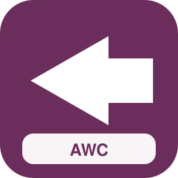
Avanti West Coast
{kind=link}
c2c
{kind=link}
Chiltern Railways
{kind=link}
CrossCountry
{kind=link}
East Midlands Railway
{kind=link}
Gatwick Express
{kind=link}
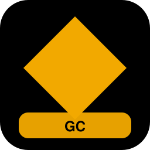
Grand Central
{kind=link}
Great Northern
{kind=link}
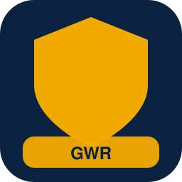
Great Western Railway
{kind=link}
Greater Anglia
{kind=link}
Heathrow Express
{kind=link}
Hull Trains
{kind=link}
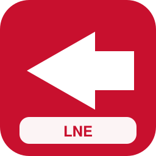
LNER
{kind=link}
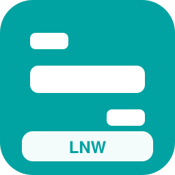
London Northwestern Railway
{kind=link}
Merseyrail

Northern
{kind=link}
ScotRail
{kind=link}
Southeastern
{kind=link}
Southern
{kind=link}
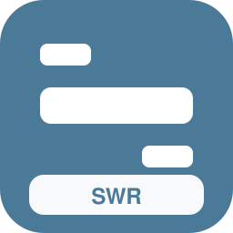
South Western Railway
{kind=link}
Thameslink
{kind=link}
TransPennine Express
{kind=link}
Transport for Wales
{kind=link}
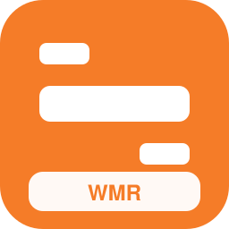
West Midlands Railway
{kind=link}
Elizabeth line
{kind=link}
London Overground
{kind=link}
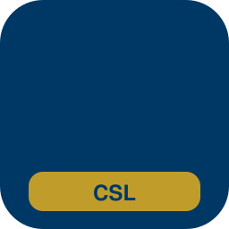
Caledonian Sleeper
{kind=link}
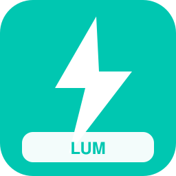
Lumo

Eurostar
{kind=link}
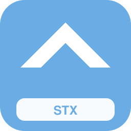
Stansted Express
{kind=link}
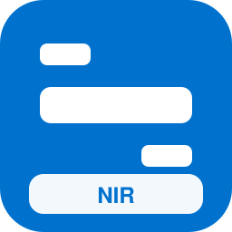
NI Railways
{kind=link}
London Underground
{kind=link}
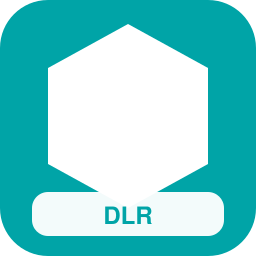
Docklands Light Railway
{kind=link}
London Trams
{kind=link}
Manchester Metrolink

Sheffield Supertram
{kind=link}
Nottingham Express Transit
{kind=link}
West Midlands Metro
{kind=link}
Edinburgh Trams
{kind=link}
Tyne and Wear Metro
{kind=link}
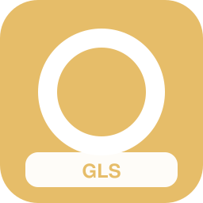
Glasgow Subway
{kind=link}
Blackpool Tramway
{kind=link}
Island Line
{kind=link}
Great British Railways
{kind=link}
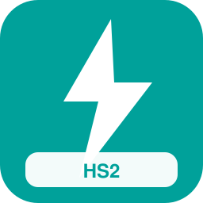
HS2 High Speed
{kind=link}
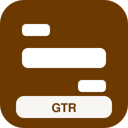
Greater Thameslink Railway
{kind=link}
Northern Regional Combine
{kind=link}
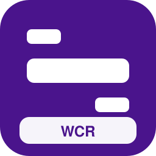
West Coast Regional
{kind=link}
Open Access South
{kind=link}
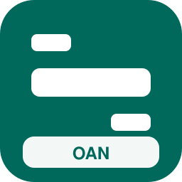
Open Access North
{kind=link}
Cymru Express Futuro
{kind=link}
ScotRail Express 2030
{kind=link}
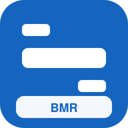
Belfast Metro Rail

Rápidos del Támesis
{kind=link}
Expreso Caledonio

Corredores del Norte

VeloRápido Británico

Líneas Maestras UK
{kind=link}
InterCiudades Británicas

Nocturno Insular

Puente Europeo UK
{kind=link}
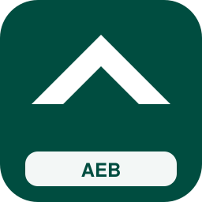
AeroEnlace Británico

Panorámicos Británicos

Líneas Libres UK

Vía Abierta Regional

Nexo Ciudades UK

Universidad Express UK

Feria y Congresos Rail

Valles Verdes UK

Costa a Costa Británica

Mediodía Inglés

Anglia Conecta

Kent Rápido

Devon y Cornualles Rail

Cotswolds Líneas

Penninos Express

Borde Escocés
{kind=link}
Clyde Urbano

Loyola Capital Rail

Manchester Orbital

Birmingham Cruzado

Leeds Distrito Rail

Bristol Bahía Rail

Cardiff Bahía Express

Belfast Rápidos

Highlands Vías

Gales del Norte Rail

Essex Orbital

Surrey Conexión

Hampshire Costero

Lincolnshire Llanura

Cumbria Lagos Rail

Norte Abierto UK

Metro Capital Plus

Tranvías del Reino

Riberas del Mersey

Alpes Escoceses Rail

Occidente Atlántico UK

Estrecho de Dover Rail

Solent Urbano

Tyne Express Sur